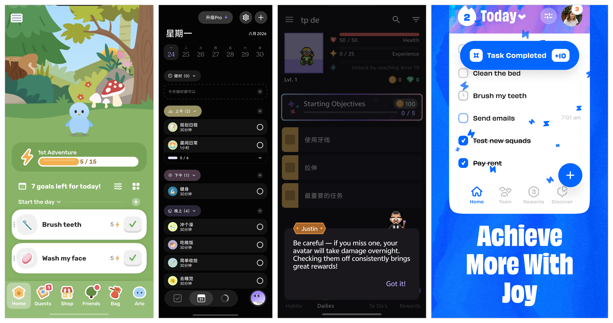
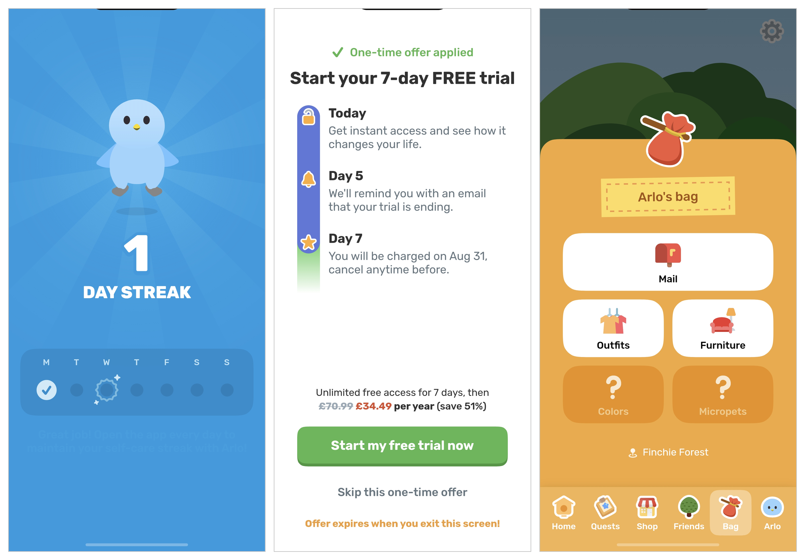
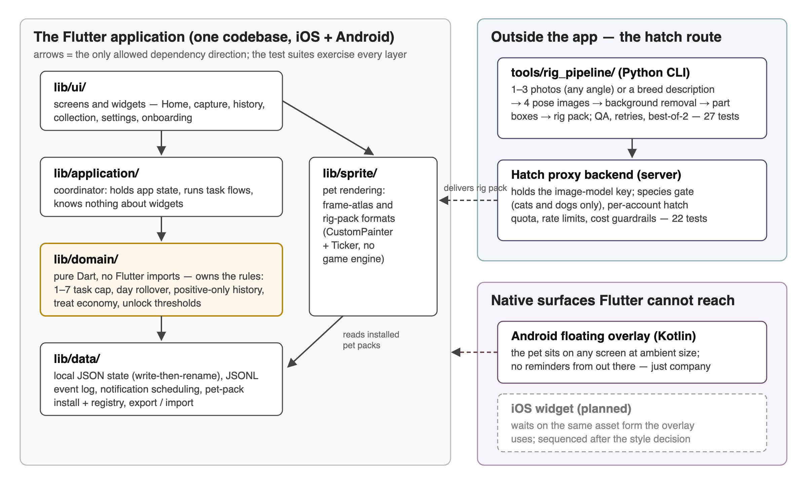
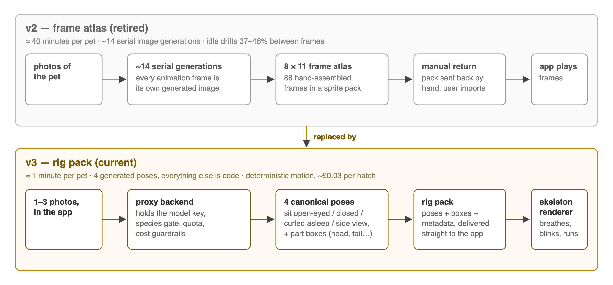
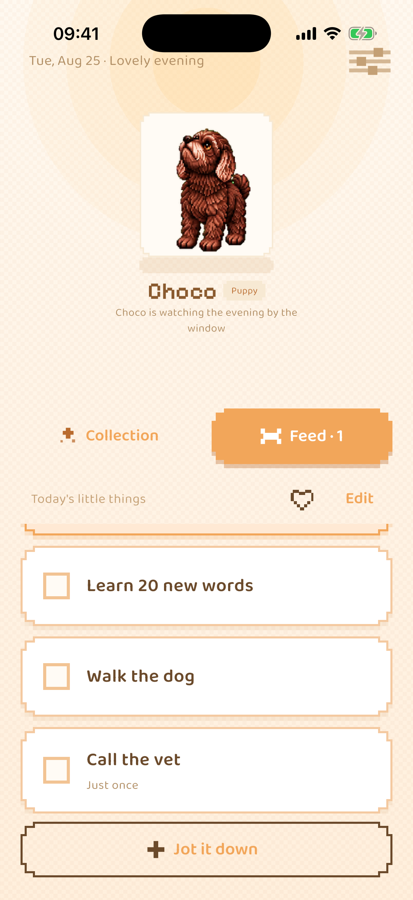
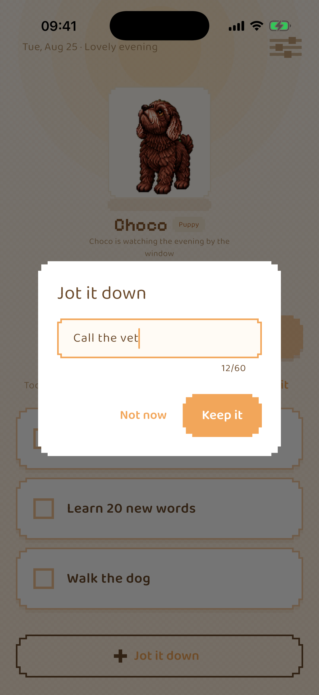
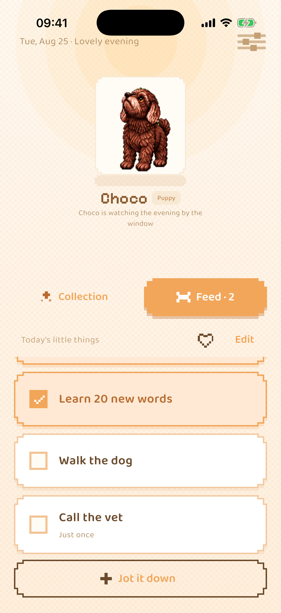
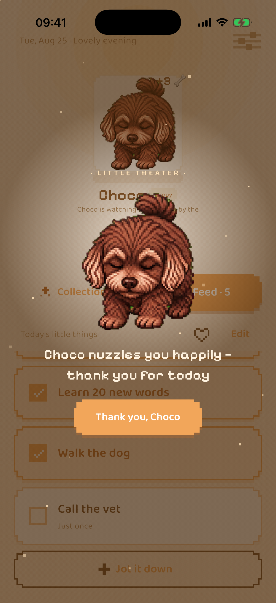
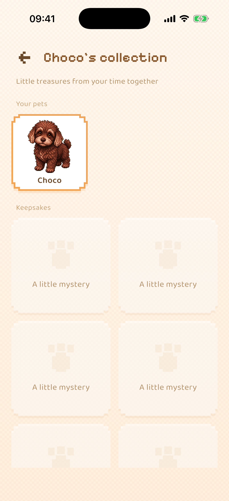
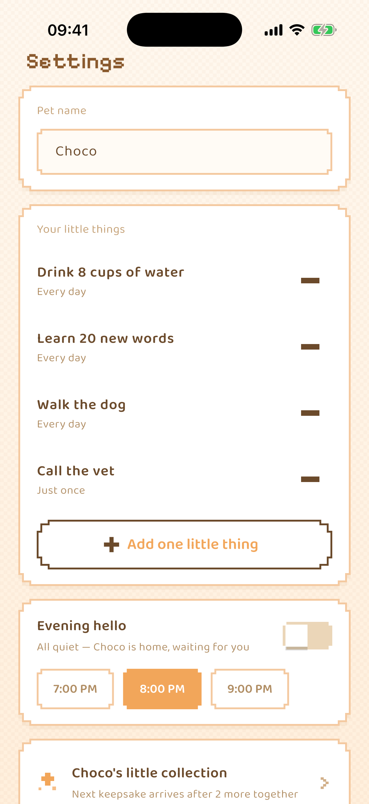

(formerly PetTodo)
Pawside is a mobile to-do application for adults with ADHD, built for iOS and Android from one Flutter codebase. Its starting idea is simple: for this population, gentle reminders rarely get a task started, but external anchors — a child, a pet, another person who depends on you — often do. So instead of sending reminders, Pawside gives the user a virtual pet — adopted from a roster of nine preset cats and dogs, or, as a one-off unlock, generated from photographs of the user's own animal — and frames a small daily task list as things the user and the pet do together. Safety rules — no punishment, no streaks, no failure states — are built into the data model rather than left to good intentions.
For this report I tested that idea against four bodies of evidence: community accounts, 4,754 app-store reviews, a structured literature search, and the build itself. The most important finding goes against the design: the anchor idea turns out to be the least evidenced part of it, while the reminder-and-planning approach it set out to replace has controlled evidence in diagnosed ADHD samples. The safety rules survived better, though studies of trackers with no character and no failure state show that removing punishment does not by itself remove guilt.
At the time of writing, the core loop is complete on both platforms and 58 automated tests pass. Since mid-term the project has also shipped a pixel-art restyle, an ambient pet overlay on Android, a new generation pipeline that turns photos into an animated pet in about a minute, and a rebuilt onboarding. The remaining work is an evaluation designed to test the anchor mechanism rather than assume it.
Most task-management software assumes the user can keep the system going. For adults with ADHD this is backwards: the mental capacity needed to maintain a productivity tool is exactly the capacity that is impaired. The specific capacity is prospective memory — remembering to do a thing at the right moment — and it does not fail evenly. In a case-control experiment, 25 adults with diagnosed ADHD were strongly impaired on time-based intentions ("do X at 7 pm") but performed like matched controls on event-based ones ("do X after dinner") (Altgassen, Kretschmer & Kliegel 2014, Journal of Attention Disorders). The population is also very mixed: across six neuropsychological domains, no single deficit shows up in more than a minority of diagnosed people — 18.1% to 36.1% depending on the domain (Coghill et al. 2014, Psychological Medicine). Whatever mechanism a tool builds will therefore help a subgroup, not everyone — and that applies equally to the reminder mechanisms this project set out to improve on.
What people with ADHD say works for them is concrete and external: a child, a dog that must be walked, an alarm clock placed across the room — not motivational messages. Pawside asks whether that observation survives being built: can a virtual pet made from the user's own animal act as an external anchor for small daily tasks?
Build and evaluate a to-do application whose engagement mechanism is an external anchor rather than a reminder, without importing the guilt that has caused similar applications to be abandoned. Objectives: (i) a dual-platform core loop that works entirely offline, with no account and no server; (ii) a pet the user cares about — a preset roster of cats and dogs so the app is complete without owning an animal, plus, as the differentiating unlock, a pet generated from the user's own animal, on the hypothesis that attachment to a real, recognisable companion is stronger than attachment to a generic avatar; (iii) safety red lines — no punishment, no streaks, no failure states — enforced by the structure of the code, not by discipline; (iv) an evaluation against a retention criterion, where the criterion itself is examined rather than assumed.
The best documentation of how this category fails comes from its own users. I read high-engagement threads across r/ADHD, r/adhdwomen and r/ADHD_Programmers — including a 4,625-upvote account of 500 days spent trialling 36 productivity applications — and three patterns repeat. First, more features do not fix the problem: the top-voted example is a user who built himself an app that read his email, prioritised it automatically and contacted him every morning — and he still did not use it. The barrier is not friction; it is getting started at all. Second, maintaining the tool is itself an executive-function task, so the tool decays exactly when the user does. Third, the community has its own evaluation standard: early reviews are worthless because ADHD reviewers chase novelty, and only two-week retention convinces anyone. One serial abandoner supplied the phrase this project now designs against: an app that "feels like my disappointed mother", where the user feels "guilty about the app I downloaded to stop feeling guilty about tasks". Commenters have a name for this state: a shame reminder.
I surveyed the four dominant applications in this space using 4,754 store reviews collected for this report (method and sampling caveats in Section 2.2), their public store metadata, and hands-on sessions with each app on my own device. Figure 1 shows one representative screen from each.

Finch (virtual bird plus self-care tasks; 739K App Store ratings at 4.9★, 10M+ Play installs) is the category leader and the reference product for the pet mechanism. Emotional-bond language ("my birb", "companion", "attached") appears unprompted in 29% of its recent Apple reviews, against 9–13% for the other three — the clearest external evidence that the pet does something the other mechanisms do not. Its failure modes are just as instructive: guilt on lapse severe enough that users stop opening the app; users faking completions to earn pet rewards, and recognising the self-deception while doing it; an aesthetic adults repeatedly call infantile; and — its top-voted Android complaint — data loss, with multi-year pets wiped and users explicitly asking for a manual backup button the product does not provide. One detailed review also locates where the mechanism works: the pet reward does not move large goals ("being rewarded by buying clothes for a virtual bird isn't enough motivation"), but it does move small daily maintenance — finishing a bottle of water, stretching, taking medication — and the app is opened to see the pet, with reminders read incidentally.
Tiimo (visual daily planner; Apple "app of the year" laurels) shows a sharp split between its 4.6★ cumulative rating and its recent reviews, 28.6% of which are one-star; its biggest complaint cluster is notifications, and it barely exists on Android. Habitica (RPG-style gamification, 5M+ Play installs) is the clearest demonstration of the punishment problem this project's red lines answer: its angriest reviews are about losing levels to a boss fight, and it has a years-long, still-open wound around Android notifications failing under battery management or arriving in overwhelming batches. Numo positions itself as the non-infantile ADHD app — the same positioning this project targets — but is burning it: 29% of its reviews concern billing disputes, and its Android rating has collapsed to 3.29★. A newer cluster of quest-style apps (Hyper, TaskHero, LifeUp) competes for the same users with "levelling up, not being told what to do".

Each omission has evidence behind it, not taste. A streak counter turns a missed day into a visible failure state: the reviews above show broken streaks producing guilt severe enough that users stop opening the app, and Section 1.3.3 shows guilt arising even in trackers with no failure state — so a streak manufactures exactly the self-judgement that drives abandonment, and for an ADHD user missed days are the texture of the condition, not a lapse of will. A trial countdown monetises the very impairment the app claims to serve — forgetting to cancel is an executive-function failure — and Numo's collapse shows the cost of being caught doing it. And the cosmetics shop sits at the mechanism's known ceiling: shop rewards do not motivate ("clothes for a virtual bird"), while a richer shop invites the faked completions users already report. This is why Pawside's treat is the only currency, is spent on the pet, and buys nothing else.
Three design consequences follow. The pet-bond mechanism is validated and its ceiling untouched. Data loss is existential for an emotional product — and worse for Pawside, whose pet is irreplaceable and whose storage is local-only. And subscription dark patterns are a category-wide trust failure that a competitor can differentiate against simply by not committing them.
Before this report I treated the anchor mechanism as established and the safety rules as obviously sufficient. I ran a structured literature search across sixteen questions to check both (method in Section 2.2). It changed my position on each, and this report states the revised positions instead of defending the original ones.
The anchor mechanism is not an established finding. The only controlled test of "body doubling" — working alongside another person — found no effect in 26 participants (Schuenke et al. 2025), and the broader social-facilitation meta-analysis puts mere presence at 0.3–3% of variance, and finds it impairs complex tasks (Bond & Titus 1983). Animal care has never been tested as a task-initiation aid in ADHD adults. Nothing I retrieved supports the chain human presence helps → animal responsibility helps → a photo-derived virtual animal helps. Pawside is therefore testing a mechanism, not implementing a proven one, and this report makes its claims accordingly.
The approach it rejected does work. If-then implementation planning improves inhibition, shifting and distraction resistance in children with diagnosed ADHD (Gawrilow & Gollwitzer 2008), on top of a large general-population meta-analysis (Gollwitzer & Sheeran 2006). The slogan "reminders do not work, anchors do" gets the evidence backwards.
Removing punishment does not remove guilt. Guilt shows up after abandonment even in self-trackers with no character, no failure state and no punitive feedback — 16.2% of activity-tracker users (Epstein et al. 2016) — because the user's own judgement generates it. Giving something a face raises the felt cost of abandoning it (Chandler & Schwarz 2010), and an analysis of 582 r/Replika posts found harms driven by role-taking: users felt the character had needs they were obliged to meet (Laestadius et al. 2024). The zero-punishment red line is necessary but not sufficient, and the shame reminder finding says the same thing from the user's side.
The one experiment that varied pet feedback found warmth-only inert. Adolescents whose virtual pet gave both positive and negative feedback were roughly twice as likely to eat breakfast; the positive-only pet did not beat the control (Byrne et al. 2012). The sample is adolescent, the outcome is breakfast, and guilt was not measured — but it is the closest existing test of this project's central safety rule, and it is not reassuring. I keep the rule as an ethical commitment; the evaluation must be able to see whether warmth-only is enough.
Three claims I had been repeating are withdrawn. The "prefrontal-to-amygdala switch" story about urgency-driven initiation falls apart when its sources are read: the finding concerns acute uncontrollable stress causing impairment, largely in animals (Arnsten 2015), while ADHD prefrontal regions are under-active. The "5–10% transfer rate" for single-mechanism ADHD interventions does not exist in the literature; it is demoted to attributed practitioner opinion. And the 1–7 task cap cannot cite Miller: "seven plus or minus two" is about immediate memory span, and Cowan calls the seven a rhetorical device (Cowan 2001). The cap is instead defended by the observation in Section 1.3.2: small daily maintenance is where the pet mechanism works at all.
What the evidence does support. Warmth-only reinforcement has a direct ADHD result: on an incentive go/no-go task, participants with ADHD gained more from social reward — positive facial expressions — than controls did (Kohls et al. 2009). And the event-based cue is the best-grounded interaction choice available, given the prospective-memory dissociation in Section 1.1. This also matches the cue type independently proposed by the early-years special-needs specialist whose feedback my supervisor forwarded — a concrete relative anchor ("can we finish this before they finish making your lunch") — rather than the clock-triggered daily prompt I currently implement.
Platform: Flutter, not two native apps. Both options produce a good product; the deciding factor is scope. Evaluation needs real users on whatever handset they own, and a solo project cannot keep two native codebases at that standard. The cost is accepted openly: surfaces Flutter cannot reach must be written natively — which is exactly what happened with the Android overlay, written in Kotlin (Section 3.4), and will happen again with the iOS widget.
Architecture: boundaries before features. Figure 3 shows the structure of the codebase. lib/domain/ is pure Dart with no Flutter imports and owns the product's rules — the one-to-seven task cap, local-day rollover, positive-only history, treat economy and unlock thresholds. lib/data/ owns storage, notification scheduling and pet-pack install. lib/sprite/ owns pet rendering. lib/application/ is a coordinator that knows nothing about widgets, deliberately kept outside lib/ui/.

The dependency arrows only point one way, which is what makes the safety rules testable. To see why, follow one tap through the layers. When the user ticks a task, the widget calls the coordinator; the coordinator asks the domain layer to complete the task; the domain layer checks the rules, emits a completion event and a treat; the data layer appends the event to the log and rewrites the state file atomically; the UI rebuilds from the new state and the sprite layer plays the happy animation. At no point can a widget touch storage directly, and none of the rules need a widget to be tested. The same boundary was demonstrated in practice twice: the approved visual design, and later the full pixel restyle (Section 3.3), were both applied without touching domain logic.
Rendering: a small CustomPainter, not a game engine. The Flame engine would also do the job, and would be the obvious choice for a game. But a game-engine dependency for one animated actor is out of proportion, and it would move animation state out of the layer the tests can reach.
Data: local files, not a database, not a cloud. State is one versioned JSON document written by flush-then-rename; events are append-only newline-delimited JSON. SQLite would be a fine alternative — but JSON files keep export and import human-readable, need no migration tooling beyond a version field, and make "your data is a file you can hold" literally true. There is no account, no server and no analytics. The reasons are partly ethical — the community research records explicit refusal to hand mental-health-adjacent data to small developers' cloud services — and partly methodological, because it makes evaluation possible without data infrastructure. Section 5 records the cost: retention cannot be measured the way any cited study measures it. The one server this project now has, the hatch proxy (Section 3.5), holds no user data: it exists to keep the image-model key off the device and to enforce quotas.
Process. Every change starts from a written task specification stating goal, file scope, constraints and acceptance criteria. I accept a change only after reading the full diff and running the build and tests locally; user-visible changes are also walked through on a device or simulator. Every feature must state which ADHD problem it solves; if that mapping cannot be stated, the feature is not built. This constitution is written down and version-controlled alongside the code, and several of its rules are enforced by tests rather than by discipline (Section 5).
Table 1 collects the main design decisions, the strongest alternative to each, and the factor that decided it.
Table 1 — Design decisions and the alternatives they were weighed against.
| Decision | Chosen | Strong alternative | What decided it |
|---|---|---|---|
| UI framework | Flutter | Native Swift + Kotlin pair | Both give a quality UI; one codebase keeps a solo project able to reach evaluation on both platforms |
| Pet rendering | CustomPainter + Ticker | Flame game engine | One animated actor does not justify an engine; keeps animation state in the tested layer |
| Storage | Versioned JSON + JSONL log | SQLite | Both are reliable; files keep export human-readable and the "no server" promise literal |
| Animation source | 4 generated poses + a template skeleton | Generating every animation frame as its own image | Both produce a recognisable pet; per-frame took ~40 min per pet and drifted between frames, the skeleton takes ~1 min and moves deterministically (Section 3.5) |
| Visual style | Pixel art ("Cozy Pixel") | Soft photo-derived style | Soft style scored well on warmth but could not hold a stable silhouette (Section 4.4); pixel art is stable and answers the "infantile" objection |
| Notification cue | Event-based (planned, Section 6) | Time-based clock prompts | Time-based prospective memory is impaired in ADHD adults; event-based is spared |
Four bodies of evidence were gathered, deliberately of different kinds so each could check the others.
Community accounts. I read high-engagement threads and their top comments across three ADHD subreddits in two sweeps — one on tool abandonment, one on the condition's daily texture — recording per-thread links and vote counts so every claim stays traceable.
Store reviews. I collected 4,754 reviews via the public Apple review feed (1,154: Finch 400, Tiimo 350, Numo 254, Habitica 150) and a Play scraper (3,600: Finch 1,612, Habitica 1,537, Numo 339, Tiimo 112), deliberately oversampling one- to three-star reviews on the Play side. That choice is recorded next to every figure it affects: Play proportions show how concentrated a complaint is, not how common it is in the population.
Literature. I ran a structured search across sixteen questions covering the mechanism, the safety rules, and claims I had been repeating. Contradicting evidence was treated as the most valuable output, and "no credible evidence found" was recorded where that was the truth, rather than substituting adjacent work. The result is a 230-row citation table recording, per row, study design, sample, population mismatch, whether the claim is supported, and retraction flags checked against both OpenAlex and Crossref (two flagged, both disclosed). I also verified eight design-critical DOIs directly against the Crossref API — all eight resolved with matching titles — and checked the Altgassen finding line by line against the published abstract.
Limitations, stated up front. All the community strands sample self-selecting, self-identifying, mostly English-speaking online populations. Store reviews are written by people still using a product; Reddit is written largely by people who left. Self-identification is itself a methodological problem: executive-function rating scales and performance tests barely correlate (median r = .19, Toplak et al. 2013), so case-control effect sizes cannot be carried over to a self-identifying sample — only the weaker claim that self-rated difficulty predicts real functional impairment (Barkley & Murphy 2010).
The core loop — tasks, sprite engine, unlocks, local notifications and the JSONL event log — works on both platforms. On top of it:
Design and accessibility. The approved visual design, plus a semantics rework: custom tap targets own container semantics above their gesture handlers, decorative art is excluded from the accessibility tree, and onboarding scrolls on short viewports.
Raising system. Growth stages derived rather than stored, a treat economy, a full-day pet schedule, long-press interaction, and a collection gallery with no progress bars. Stored data migrates in place when the format grows, so an update never loses a pet.
To-do baseline. Tasks are ID-addressed objects of kind daily or oneOff, capped at one to seven; quick capture requires only a title; one-off tasks never carry age or overdue data. Positive history is derived only from completion events and renders only weeks that contain completions — no streak, gap, zero or missed-day state exists anywhere in the product.
Stability. Two real defects found and fixed: a quick-capture crash on dialog dismissal, and an Android release build that black-screened because release resource shrinking stripped the notification icon. The fix for the second also ensures a notification failure can never block startup again.
The differentiating feature in its first form: the user photographs their animal; the app assembles a request package; a sprite pack (.pettodopet) produced by the image-generation pipeline is imported and installed atomically; and a runtime registry merges bundled pets with installed packs. A later change made onboarding list the live registry instead of one hardcoded pet, and cleaned up exported request archives that had accumulated indefinitely.
Living with this build daily — I am inside the target population, which the evaluation treats as a stated limitation, not a secret — surfaced its main weakness: the idle animation read as choppy. Measurement found the cause. The six idle frames were generated independently, so 37–46% of pixels changed between neighbouring frames and the silhouette drifted about 4 px — six similar dogs rather than one dog breathing. The interim fix held a still frame while the pet rests; the real fix is the second-generation pipeline in Section 3.5.
The pixel-art experiment reported in Section 4.4 settled the style question, and the decision has been carried through the whole product, not just the sprite. The "Cozy Pixel" restyle gives the app stair-stepped borders, hard shadows, and pixel fonts and icons; the bundled pet Choco was regenerated as pixel-art canon with a full QA atlas. Because the restyle is confined to lib/ui/ and asset files, it landed without touching domain logic — the architectural claim in Section 2.1, demonstrated a second time. The same wave carried a naming change: the product took its release name, Pawside, replacing the working title PetTodo, with paw-print imagery replacing the egg motif and user-facing copy moving from "hatching" to "adoption" language. This report uses Pawside throughout; repository paths and technical identifiers such as the .pettodopet pack extension deliberately keep the old name. The retro aesthetic is also a positioning answer: Section 1.3.2 documents adults calling the category leader infantile, and pixel art reads as adult nostalgia rather than as a children's toy.
The strongest single piece of user evidence in the review corpus is a five-star review describing a widget's pet speaking to the user on a day they had already given up. That surface is now built for Android: a floating overlay, written natively in Kotlin, that keeps the pet on screen at a small ambient size whatever the user is doing. The first build rendered the pet at a third of the screen; the shipped version draws it at 1× — ambient means peripheral. In line with the red lines, the overlay never speaks about tasks: no reminders come from it, it is simply company. If the user declines the overlay permission, the app continues silently and never asks again.
The first-generation pipeline (Section 3.2) produced its pet by generating every animation frame as its own image: about 14 serial generations and roughly 40 minutes per pet, with the inter-frame drift measured in Section 3.2, and the finished pack returned to the user by hand. That route is now retired. Its replacement generates only four canonical poses — sitting with eyes open, the same pose with eyes closed, curled asleep, and a side view — plus bounding boxes for the head, tail and legs, and packs them as a "rig pack". Everything that moves is code: a template skeleton drives breathing, blinking, gaze-following, a happy jump, eating a treat, stretching, falling asleep and running, with motion quantised to the pixel grid so it stays honest to the art style. Figure 4 compares the two routes. A hatch now takes about a minute and costs roughly £0.03 (¥0.3) in model fees, which makes hatching in-app viable: photos go from the app to a small proxy backend that holds the image-model key, enforces a species gate (cats and dogs only for now), a per-account hatch quota, rate limits and cost ceilings — and returns the finished pack straight to the device. No account is created and no photos are retained server-side. The photos themselves can be taken from any angle — the in-app guidance says only that different angles improve generation quality — and the four poses are generated outputs, not required inputs. Pets hatched by the old pipeline keep working: the renderer routes by pack format, and the two formats run side by side. The "failed" reaction class present in early animation drafts is permanently absent, by red line.
The same pipeline also produced the preset roster: nine cats and dogs generated from breed descriptions alone, no photographs involved, with several candidates rendered per pet and the best face hand-picked. The presets are free, so the app is complete for someone who owns no animal at all; hatching your own pet is a one-off paid unlock that includes three hatch attempts, and photos of anything other than a cat or dog are gently declined, with the requested species recorded as a wish for a future template.

The pipeline is a Python CLI (tools/rig_pipeline/, 25 tests) with retries and best-of-two sampling built in, and it produced two engineering findings worth recording. First, retry amplification: retrying at two layers meant a single failing request could balloon to sixteen HTTP attempts, and permanent client errors were being retried as if they were transient — the fix is one retry layer and explicit error classification. Second, a geometry lesson: the side-view tail detector originally judged which side the tail was on from the canvas centre, which breaks the moment the subject is off-centre; it now judges from the centre of the detected head box.
The original onboarding introduced features. The rebuilt flow introduces the pet first, on the reasoning that Section 1.3.2 supports: the app is opened to see the pet, so the first minute should establish that bond. The user meets an adoption grid of the nine preset pets ("Who's coming home?"), rendered from the live pet registry rather than hardcoded, picks one, and names it — with a dice button that rolls a name from a preset pool, so the single typing moment has a zero-effort escape. A quiet line beneath the grid — "Your real pet can live here too" — points at the own-pet unlock without selling it. They then pick up to three "little things" from tappable chips (get out of bed, drink some water, take my meds…), with typing needed only for a custom entry. A mid-point celebration awards the first treat before any real task is done, so the reward loop is demonstrated rather than described. On Android, the overlay from Section 3.4 is offered as an invitation ("Can I stay on your screen?") through the same never-re-ask permission flow. The user lands on Home with one free, scripted first win — "Give {name} a pat" — which triggers the normal completion celebration and does not count against the one-to-seven cap. Finally, the evening check-in prompt moved out of onboarding entirely: the pet asks in context on the first evening the app is open, which is also when notification permission is requested. Existing users never re-run onboarding.
A rework of the notification layer — copy in the pet's voice, randomised selection, timing jitter, and back-off after unopened days — is implemented but unmerged, because the literature contradicts two of its three mechanisms. Section 6 explains the conflict and the resolution path.
All screenshots below are from one continuous session on an iPhone 17 Pro simulator running the current build — the pixel restyle of Section 3.3 — from a clean install, with the preset pet Choco adopted during onboarding. They are ordered as a user would meet them.

The pet takes the top half of the screen and the task list the bottom, and that proportion is deliberate: the pet is not a decoration on a to-do list, it is what the screen is about, and the tasks are what the user passes on the way to it. The list shows both task kinds — three recurring items and Call the vet, marked "Just once" — and that quiet subtitle is the only distinction drawn. There is no due date, no age, no overdue marker and no count of what remains; a one-off captured weeks ago looks exactly like one captured this morning. The task area is a bounded scrolling region, so seven items can never grow into a wall of text. The header reads "Today's little things", and a completed item stays visible in a warm tint rather than being struck through or removed.

Capture is two steps: tap Jot it down, type, confirm. The field is autofocused, only a title is required, and the placeholder — "A thought before it slips away" — names the problem this dialog solves: a thought that leaves working memory in seconds cannot survive a form. Anything captured here becomes a one-off by default, because demanding a recurrence decision at capture time is exactly the friction that loses the thought. The dismissal option says "Not now", not "Cancel" or "Discard".

Completion produces warmth and nothing else: the card takes a warm tint, the circle fills, the pet plays a brief happy animation, and a treat drops — the counter has gone from one to two. There is no score, no streak, no progress bar and no "3 of 4 done" anywhere on screen, because a progress indicator is also a deficit indicator. The treat is the only currency, it is spent on feeding the pet, and spending it is optional.

Finishing everything on the list triggers the one moment the application makes a fuss: the pet fills the screen, particles rise, three bonus treats are awarded, and the message reads "Choco nuzzles you happily — thank you for today". The dismiss button says "Thank you, Choco", keeping the exchange between the user and the animal rather than between the user and a scoreboard. This is the emotional peak of the design. It is also, by construction, the only moment with this weight — there is no equivalent screen for failure, because no failure state exists.
The history screen is the clearest single expression of the safety architecture. It reads "This week, you and Choco did 3 things together", and lists only Tuesday — because Tuesday is the only day with completions. Days without completions are not shown as empty, greyed or zero: they do not exist in the data model at all, so no view can accidentally surface them. There is no streak counter, no calendar grid with gaps that read as failure, and no comparison with last week. The framing is "things we did together", not "your completion rate".

Two things share this screen. The pet shelf lists every pet the user has — here the adopted preset, Choco — with the active one outlined; a hatched own-pet appears alongside it, which is the runtime registry from Section 3.2 made visible and the point where the differentiating feature becomes tangible. Below it, unlocked keepsakes appear as illustrated items; locked ones show a paw silhouette and the words "A little mystery". They carry no progress bar, no unlock threshold and no "2 more to go", so the gallery cannot be read as a list of things not yet earned.

Settings is deliberately short. Tasks are listed with their kind stated in words ("Every day" against "Just once") and removed with a single control; there is no archive, no completed-items list and nowhere for finished work to pile up. The notification section is one toggle and three fixed times, and its subtitle is phrased as something the pet does rather than something the user must configure. Notifications are off until explicitly enabled, and a denied permission is never requested again.
The acceptance walkthrough for the differentiating feature ran on the same device from a clean install: onboarding → hatchery → photograph → export of a 139 KB request archive → import through the real iOS document picker → both pets listed with the new one selected → switching between them → completing onboarding → Home showing the imported pet with its hatch ceremony — ending with zero leftover archives in documents. Two further screenshots taken during that run record the ceremony and the resulting Home screen.
Three findings from the build are results in their own right. A custom file extension cannot be picked in the iOS document picker unless the app declares it — the picker produces a dynamic UTI and Files greys the file out — fixed by declaring UTExportedTypeDeclarations. Re-importing a pack for the currently selected pet paints a disposed image during the asynchronous gap, unless the replacement atlas is loaded before the old one is disposed. And exported request archives accumulated indefinitely because cancellation deleted the request folder but not the archive next to it — found by inspecting the simulator's container, where the previous day's 139 KB archive was still sitting.
The fourth result began as a negative one and is reported as such. To test whether a pixel-art style would improve frame-to-frame consistency, I first generated a pixel version through the sprite pipeline's own pixel preset. The output was not pixel art: 13,713 unique colours, against fewer than 32 for the real thing. Mechanical post-processing — downsampling plus palette quantisation — did produce true 23-colour pixel art but destroyed recognisability, because the eyes and muzzle are defined by exactly the detail that downsampling removes first. What worked was constraining the generation itself: a 64×64 logical grid, blocks aligned to it, a 24-colour palette, no anti-aliasing. That produced genuine pixel art that kept the identity anchors — the silver-brown muzzle, the brow spots, the floppy-ear silhouette. A six-frame idle strip built from that reference measured 14% inter-frame drift after quantisation, against 42% for the then-current style, with frame area stable to within 0.2 percentage points: the silhouette stops breathing in and out between frames. The improvement was real but partial — 14% is still far above a hand-animated loop — which is why the style decision and the pipeline decision were made together: pixel art made the frames consistent (Section 3.3), and the rig made the motion deterministic (Section 3.5). The aesthetic choice also answers the "infantile" objection documented against the category leader in Section 1.3.2.
flutter test passes 58 tests across 20 files — a figure I verified by running the suite, not by quoting it. The pipeline CLI carries its own suite: 25 tests across 6 files, run the same way. The unmerged notification rework adds five more, including a lint that fails the build if invitation copy ever regains a forbidden phrasing. Coverage concentrates on the promises the product makes its users: migration of stored data across format changes; day rollover, including that rolling over multiple missed days leaves no historical markers; one-off isolation from daily rollover; treat and unlock edges; the sorted, capped notification window with one fire per task per day and no re-asking after permission denial; local-week positive-history aggregation; JSONL round-trips; sprite atlas frame mathematics; pack install and validation; and accessibility semantics boundaries. The intent is that the red lines are enforced by tests, not by discipline.
Gaps before submission: no end-to-end automated UI test; the Android overlay and the rebuilt onboarding need device-level walkthroughs on more than my own handset; and Android notification timing needs device-level verification, because the review corpus shows scheduled notifications failing or arriving in batches under OEM battery policies as a category-wide defect (111 of 1,537 Habitica Play reviews, 63 of them one or two stars).
The full plan is written up as a separate document. In summary: five to ten seed participants who are ADHD-leaning pet owners, recruited through my personal network only; a fourteen-day run; a short questionnaire at days 7 and 14; user-initiated local data export as the only data channel; and qualitative red-light monitoring for guilt or uncanny reactions to the user's own animal, treated as a finding that outweighs any retention number. Covert recruitment in ADHD communities is ruled out both ethically and pragmatically — the community research documents moderators publicly naming products for stealth marketing. Ethics approval is the longest-lead-time item and the first question for the school.
Two revisions to the evaluation follow from the literature, and are recorded here because they change what the evaluation can claim. First, the community benchmark of ">50% retention at two weeks" conflates two incompatible frames: real-world median 15-day retention for mental-health apps is 3.9% (Baumel et al. 2019), while recruited trials run near 75% and report usage a median 4.06× higher than real-world use of the same programs (Baumel et al. 2019). A recruited seed group is a trial population, so >50% is a weak bar in that frame and an extraordinary one in the other — the report will state which frame it is in. Second, two weeks is the wrong window anyway: the review corpus locates two failure points, days 2–4 when setup enthusiasm fades, and roughly the second month when novelty does. A day-60 check is added. Unblinded self-report is also the most inflation-prone outcome in this field — behavioural-intervention effects in children collapsed to non-significance under probably-blinded assessment (Sonuga-Barke et al. 2013) — so the analysis privileges the logged event data over questionnaire answers wherever the two disagree.
The application now does what it was specified to do, and the research conducted for this report says the specification was partly wrong. That is the honest summary, and the remaining work follows from it rather than from the original plan.
Resolve the notification design against the evidence. The unmerged branch implements randomised copy, timing jitter, and exponential back-off after unopened days. The literature supports none of the three as mechanisms: the closest test found a purpose-built 30-message bank no better than a single fixed string (Bell et al. 2023); jitter is opposed by cue-consistency accounts of habit formation (Lally et al. 2010); and one trial found less frequent notification produced less viewing and actioning (Morrison et al. 2017). Worse, withdrawing contact is ambiguous by construction, and rejection sensitivity is defined as readily perceiving intentional rejection in ambiguous behaviour (Downey & Feldman 1996) — so back-off may be a guilt pathway rather than a protection. The copy rewrite is kept on separate grounds; the two mechanisms stay under review.
Move from time-based to event-based cues. The clearest evidence-led change still unbuilt: anchoring a task to "after dinner" rather than to 19:00 uses the prospective-memory channel that is spared in ADHD adults rather than the one that is impaired, and matches the cue type the forwarded expert feedback independently proposed. The evening check-in's move out of onboarding and into context (Section 3.6) is a first step in this direction.
Design the return screen and an explicit pause. Zero punishment does not stop an accumulated backlog from speaking — the shame reminder. Two mechanisms answer it: a first screen after absence that shows the pet's own accumulated news rather than the user's arrears, and a deliberate pause action that reframes absence as chosen rather than failed.
Promote export to a user-facing backup. The application is local-only, the pet is generated from the user's own animal and is therefore irreplaceable, and data loss is the top-voted complaint against the category leader — which at least has accounts to restore from. The export mechanism exists; making it a visible backup with an honest explanation is a small change against a disproportionate risk.
Finish the new-pipeline rollout. The pipeline, proxy, renderer, preset roster and unlock flow all exist (Section 3.5); what remains is pricing the unlock (it currently ships with a placeholder price), routing the adopted pet onto the Android overlay, and the iOS widget as the second ambient surface — which can now reuse the pixel asset form the overlay draws.
Evaluation. Ethics enquiry, recruitment, the fourteen-day run with a day-60 follow-up, and analysis. The outstanding intellectual work is deciding what the project claims when its central mechanism is, on present evidence, unproven — and running an evaluation honest enough to find out.